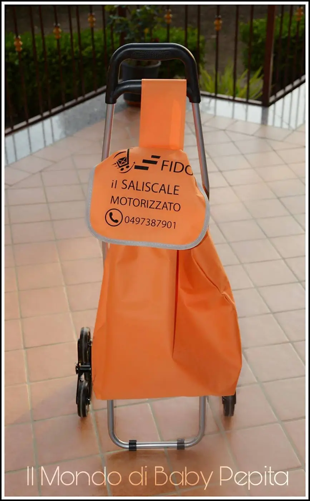
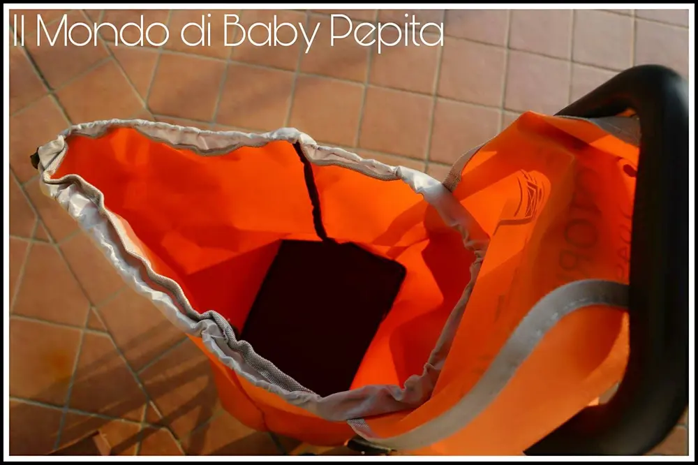
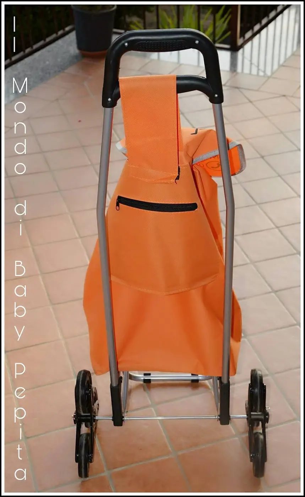
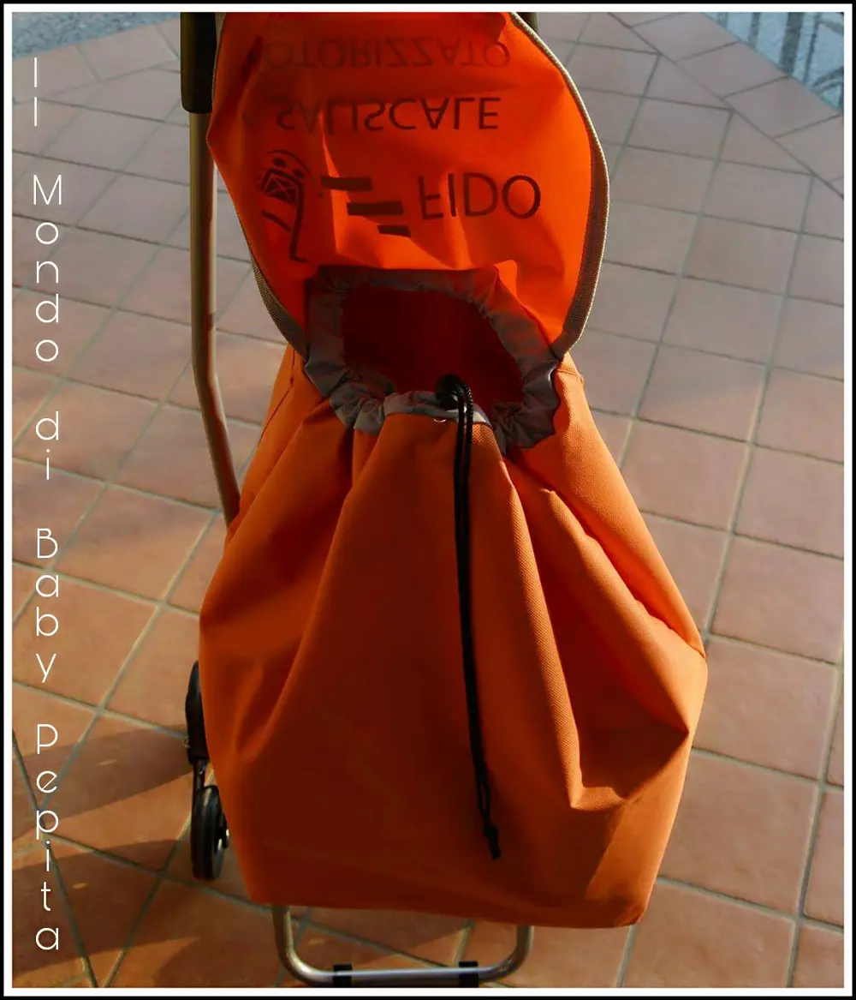
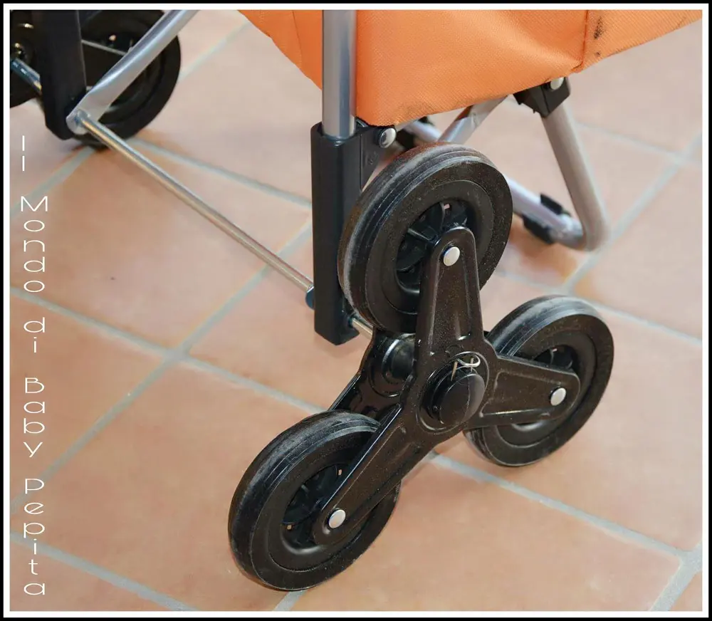
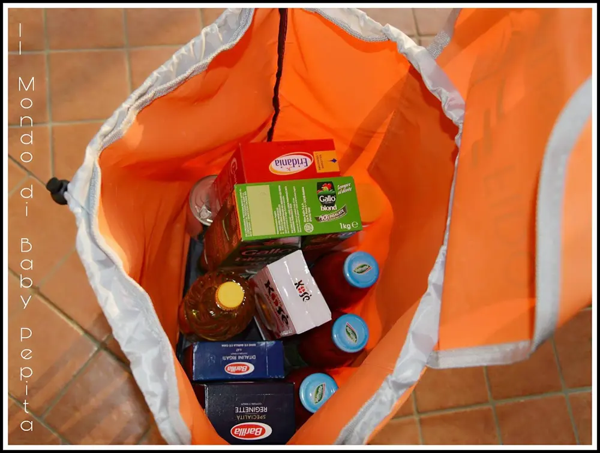

FIDO il saliscale

Quante volte andiamo a fare la spesa e ci ritroviamo con cumuli di buste strapiene che non riusciamo nemmeno a trasportare? Quante volte avete detto: "questo carrello me lo porterei fino a casa per portare la spesa"? Quante altre invece, arrivati a casa avete incontrato gente per le scale e vi siete fatti aiutare a portare su le buste?

Beh, oggi c'è un modo per evitare tutto questo, c'è un modo alternativo per mettere fine allo stress del trasporto, del peso e del sollevare buste pesanti fino ai piani alti.
Esist un CARRELLO PORTASPESA innovativo e non come quello degli anziani che, potreste dire: "non ho 60 anni!" . .

Tale saliscale è comodo sia per anziani ma soprattutto per giovani mamme o donne che non possono e non vogliono fare tanta fatica. È economico, colorato e super comodo.
È la soluzione ideale per chi ha mal di schiena, per chi ha problemi di deambulazione e soprattutto, non dimentichiamo, per chi è privo di ascensore.

Il carrello è dell'azione Fido il saliscale che è diventata, in poco tempo, una delle aziende leader nel settore per qualità e prezzo.
Il carrello in questione è il porta-spesa ed è munito di 3 ruote, che grazie alla rotazione di esse, salgono e scendono i gradini senza farti faticare facendo tutto da sole.

Ha una capienza davvero estrema, pensate che io ho messo all'interno la metà della mia spesa e c'è ancora tantissimo spazio. Quindi non avrete problemi di spazio. È infatti collaudato per una capienza di 2 casse d'acqua.

Creato di un tessuto di stoffa resistenze di color arancione, non c'è pericolo che si possa strappare.
Peso di tutto il carrello: 1.5 kg (quindi leggerissimo)
Dimensioni: 37 x 7 x 90 cm
Prezzo: 23,69 €
I LORO SOCIAL: